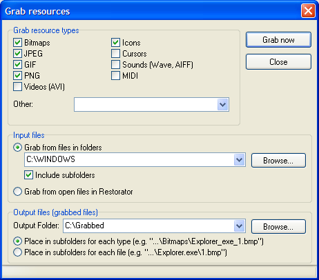

Restorator
Grab Resources Tutorial
Tutorial: Grab Resources!
This example
shows how you can extract resources from many files at
once.
1. Open
the Grab Resources dialog
Press the Grab
Resources tool button. This dialog appears:

2.
Decide which resources to be grabbed
Select with the
checkmarks which types of resources you want to grab. If you want
to specify a specific resource type name, you can enter it in the
field "Other".
3.
Specify input files
The input files
box lets you limit the files from which the resources are
extracted. You can either choose to grab from files in certain
folders (and sub-folders) or from all open files in
Restorator.
4.
Settings for the output files
First you can
enter the path where all extracted resources will be stored. You
can enter a non-existing folder there - it will be created
automatically.
Then you have 2
options how the files will be sorted: Either by type (then each
filename is preceeded by the exe file where the resource
originates) or by exe file.
5. Grab
it !
In the example
above, I extracted 2424 icons, 1233 cursors and 6399 images
!
6.
Remark
The Grab Dialog
is not available in the trial version - you need to purchase Restorator
to be able to use this powerful tool.
[Back]
Copyright 1997-2007 by Bome Software
|